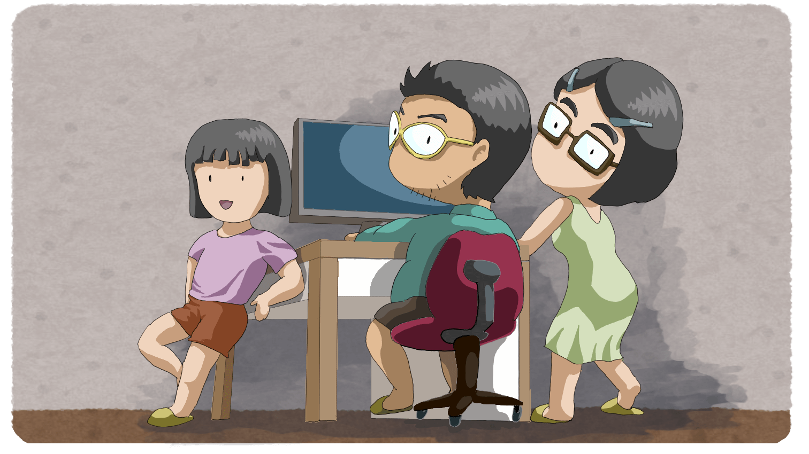

This website is the personal works of ShuKaiYangTW, and includes self-study courses, free tools, and some web games, all of which are published here with online documentation. All content on this website is provided free of charge; no payment or personal information is required.
I'm a middle-aged software engineer living with my family in northern Taiwan. I have a master's degree in Computer Science and have been working for the research center for Humanities and Social Sciences of a national university for over a decade, assisting with various research projects. I have a wide range of interests. More than researching AI technology, I care about the social impact of the AI revolution and the personal qualities that the next generation should have in the AI era.